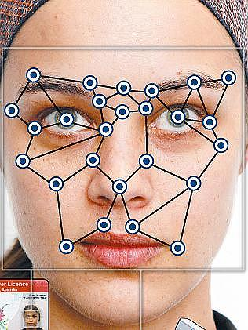
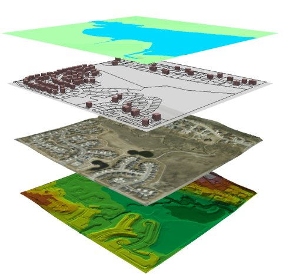
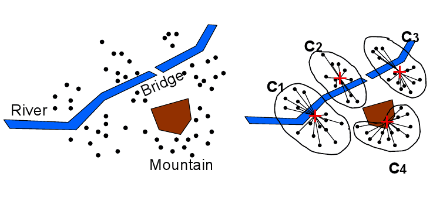
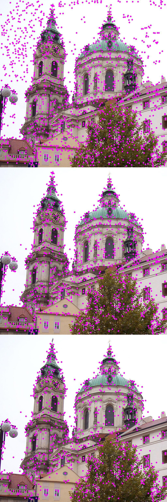
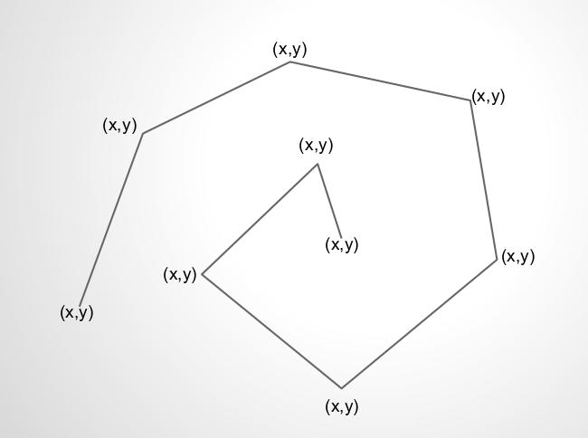
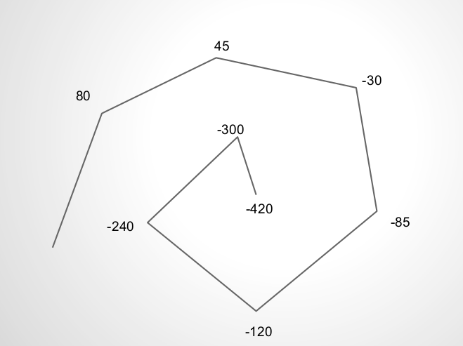
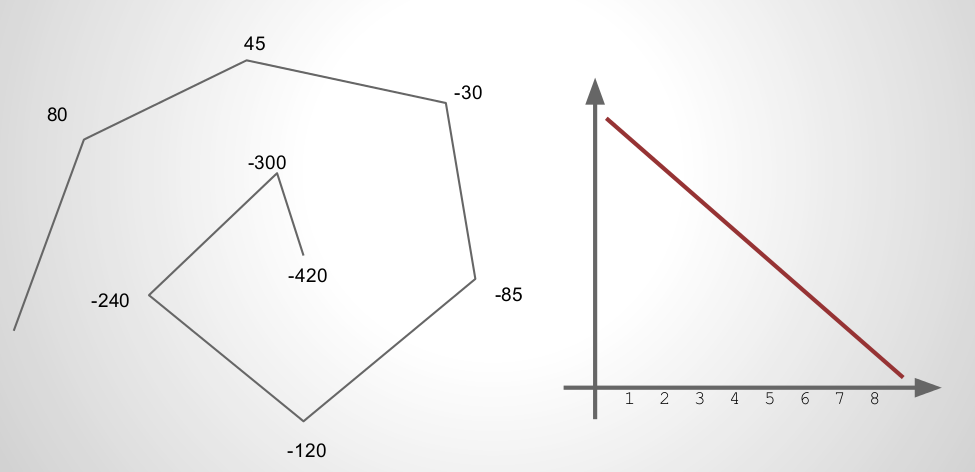
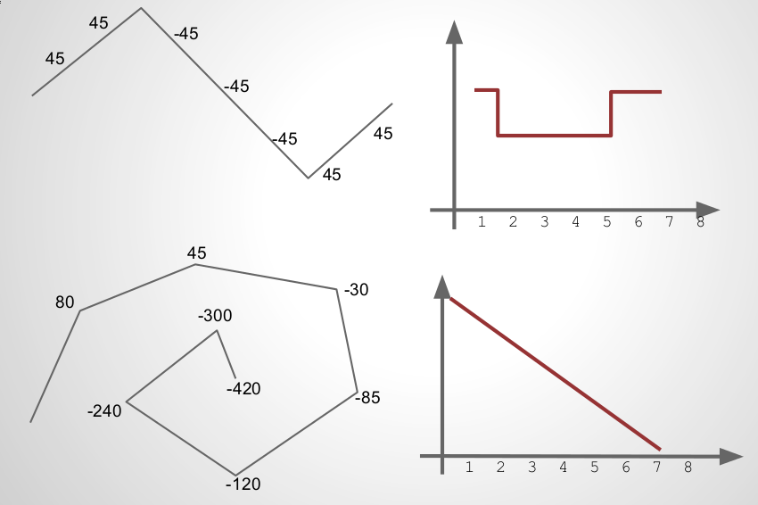
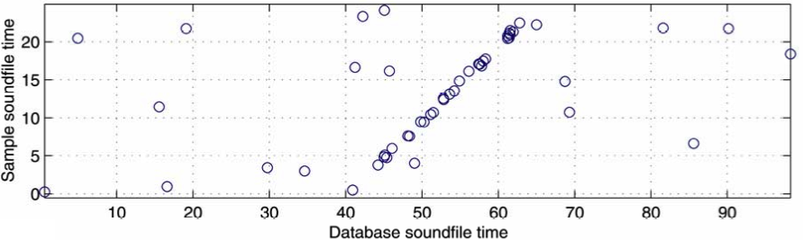

name: inverse layout: true class: left, top, inverse --- # Multimedia Data Mining --- # Features two_col: + Core algorithms similar to "traditional" data mining + Difference lies in feature engineering + How to translate intuitions to numbers and formulas?  --- # Types + Spatial: geographic points and features, including natural and man-made phenomenon + Images: Size, color, shape, curves, relative positions + Music: Tone, tempo, beat, rhythm + Voice: Speed, accent, word pauses, background noise ??? ## Covering + We'll cover these areas briefly to get an overview of techniques used in these fields + All of these things *have* embedded information in them, and we are trying to extract it + One of the reasons data mining is not a black box: some one has to be on the outside interpreting results. Results inform technique --- # Generalization two_col: + Many of these areas have digital representations + Can we use the raw bit representations? + Usually not: must generalize patterns ??? ## Density + The data we get from digital representations is generally too sparse + Key component of good learning is *data*, but you need fairly *dense* data to learn a pattern + Hypothetically, a neural network could extract general features from raw data, but you'd need a really large amount of data in order to get the density needed + Example: for NLP, perhaps your corpus is too sparse: not many words are shared between documents. So instead generalize: what parts of speech or patterns show up across documents? --- # Generalized Features + Derivative / Slope of behavior + Min / Max of groups of points + Bucketing / Blurring + Relative positions / angles ??? ## Techniques + How can you strip some of the non-essential information, keep important patterns? + Many times we care about relative change, like in pricing + Or group data points together (clustering is an advanced form of this) + OK, let's get into some specifics: --- # GIS two_col: + Geographic Information Systems + Analysis and visualization of geographic data + Search, terrain, object detection, flow calculations  --- # Spatial Databases + Integrates spatial information with traditional DBMS operations + Spatial indexing, distance metrics, polygon definitions, layering + Eg: Oracle Spatial Data Cartridge, ESRI Spatial Engine --- # Discovery + What are examples of efficient city layouts? + What influences successful business centers? + Deforestation rates ??? ## Ideas + City layouts: Understanding home->work distances, not Euclidean, but traffic on streets or by public transportation, recognizing traffic jams + Business centers: analyzing network flow based on roads: industrial supply centers nearby? Creative centers, restaurants, nightlife? + Deforestation: nearby cities' effect? Recognizing forested areas vs clear cut. Time series --- # ATM Locations given obstacles center:  ??? ## Yelp + This is a current area we could improve at Yelp: + Just because you're a mile from a restaurant doesn't mean it is "close" + Maybe across the Bay, or maybe in between metro stops + How can you calculate efficiently? --- # Images two_col: + General Feature Extraction + Sketch Recognition + Image Recognition  ??? ## Covering + We'll cover some interesting ways to extract dimensions + ML/data mining combine these dimensions to do recognition with, eg. labeled data + Image on the right is using an algorithm to pick out, then filter "interesting" points on the image + img: http://en.wikipedia.org/wiki/Scale-invariant_feature_transform --- # SIFT ??? ## Process + Successively apply Gaussian blur to image + Find points which "stand out" between blurs (ie big differences) + You can connect these keypoints to make a kind of fingerprint + These fingerprints can be used, scaled, etc. to match against other images --- # Sketch Recognition center:  + Find (x,y) points along a sketch ??? ## Why? + Sketch recognition can be used to see if you're drawing shapes + Be nice to be able to snap a picture of your diagram on a napkin and have it come out nicely formatted? + But how to recognize a circle, assuming you can't draw a perfect circle? + Start with (x,y) points, but as we mentioned, very sparse + Images by Marty Field --- # Direction center:  + Find angles along a sketch ??? ## Angles? + Instead of points, measure the angle at each turn + You'll notice something peculiar about these angles. What? + They're more than +/- 180 because we want to continue a "trend" if they're turning the same way. Help identify changes in direction vs spirals --- # Direction Plot center:  + Plot angles vs time ??? ## Why? + Becomes even more generalized: + What is the derivative? + How many times to we change derivatives? --- # Direction Plot center:  + Plot angles vs time ??? ## Why? + Example where we change directions --- # Features center: + NDDE: Normalized Distance between Direction Extremes + DCR: Direction Change Ratio ??? ## Why? + NDDE: Are the discontinuous changes in direction, or is the line + generally curvy, and follows a similar path? + DCR: Total amount of angle change in the sketch. Low for first, high for second + Others?: bounding box size/ratio, stroke length, distance between endpoints, length, width, height, speed, direction, acceleration --- # All Together Now <iframe src="http://player.vimeo.com/video/6496886" frameborder="0" webkitAllowFullScreen mozallowfullscreen allowFullScreen></iframe> <p><a href="http://vimeo.com/6496886">Sketch2Photo: Internet Image Montage</a> from <a href="http://vimeo.com/user2276797">Tao Chen</a> on <a href="http://vimeo.com">Vimeo</a>.</p> [Sketch2Photo](http://vimeo.com/6496886) --- # Music + Generate a finger print: time, frequency, amplitude + Filter most intense (largest) amplitudes + Create a hash of connections between points + Match, in time, the hash between songs  ??? ## Relation to Images + Interesting to note: we transformed one media type (music) into another (image), then started using some techniques we've seen in image fingerprinting + More in reading --- # *Break* --- Slide 1 main next slide is two column Slide 2 main Slide 3 main a series of sections will work better for some definitions a series of sections will work better for some definitions a series of sections will work better for some definitions a series of sections will work better for some definitions notes next slide is two column Slide 4 main notes Slide 5 main notes next slide is two column Slide 6 main Slide 7 main Slide 8 main notes Slide 9 main notes next slide is two column Slide 10 main notes Slide 11 main notes Slide 12 main notes Slide 13 main notes Slide 14 main notes Slide 15 main notes Slide 16 main a series of sections will work better for some definitions a series of sections will work better for some definitions notes a series of sections will work better for some definitions a series of sections will work better for some definitions a series of sections will work better for some definitions Slide 17 main check link Slide 18 main notes Slide 19 main Headings are the right level?